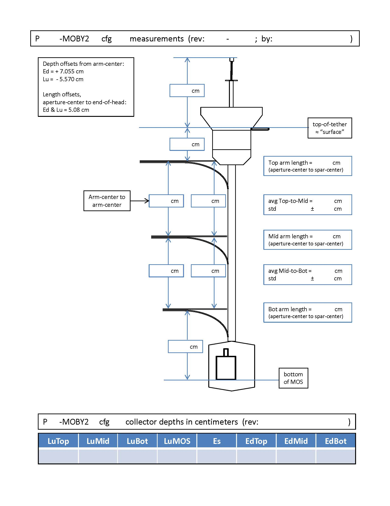

Arm Depth Form
This will allow a team member enter the arm depth measurement for a deployment.


Marine Optical BuoY
M
O
B
Y
This will allow a team member enter the arm depth measurement for a deployment.